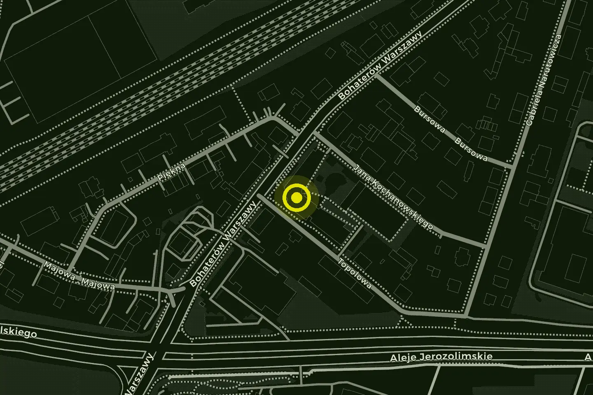

Aikido Pruszków
AI · KI · DO — harmonia · energia · droga
Pierwszy trening gratis
Przyjdź na treningDzieci od 8 lat, młodzież i dorośli · wtorki i czwartki · 530 145 350
01 — Droga
Czym jest aikido
Aikido to japońska sztuka walki, w której nie przeciwstawiasz się sile atakującego, tylko ją wykorzystujesz — przyjmujesz jego ruch i wykonujesz rzut, dźwignię lub unieruchomienie.
Nie trzeba być silnym ani wysportowanym. Aikido trenują kobiety i mężczyźni w każdym wieku, bez rywalizacji i we własnym tempie.
Trening obniża stres, poprawia sprawność, kondycję, równowagę i koordynację ruchową. Pozwala oderwać się od codziennych spraw i poczuć się bezpieczniej.
- W Pruszkowie od
- 2010
- Instruktor
- Rafał Jaroszewski, 5 dan
- Klub
- Warszawskie Centrum Aikido
02 — Zajęcia
Dla kogo są treningi
-
Aikido dla dzieci
Dwie grupy: 8–10 i 11–14 lat. Zabawy ruchowe, przewroty i techniki dopasowane do wieku.
-
Aikido dla dorosłych i młodzieży
Wtorki i czwartki wieczorem. Od podstaw, bez rywalizacji i we własnym tempie.
-
Pierwszy trening
Gratis i bez zapisów. Co zabrać, kiedy przyjść i jak wygląda trening.

03 — Grupy i grafik
Grafik treningów aikido w Pruszkowie
| Grupa | Dzień i godzina |
|---|---|
|
Dzieci młodsze
|
wtorki — |
|
Dzieci starsze
|
czwartki — |
|
Dorośli i młodzież
|
wtorki i czwartki — |
04 — Opłaty
Składki miesięczne i kwartalne
| Miesięcznie | Kwartalnie | |
|---|---|---|
| Dzieci | 200zł | 570zł |
| Dorośli i młodzież | 250zł | 720zł |
Pierwszy trening gratis
Potem składka miesięczna albo kwartalna — kwartalna wychodzi o 30 zł taniej niż trzy miesięczne. Jak przyjść na pierwszy trening
05 — Dojo
Szkoła Podstawowa nr 1 im. Józefa Piłsudskiego, ul. Topolowa 10
Aikido w Pruszkowie istnieje od 2010 roku. Jesteśmy częścią Warszawskiego Centrum Aikido.


06 — Kontakt i zapisy
Pierwszy trening gratis
Zapisy trwają przez cały rok. Wystarczy przyjść przed treningiem i zgłosić się do prowadzącego — na pierwsze zajęcia wystarczy wygodny strój sportowy i woda. Zobacz, jak wygląda pierwszy trening.